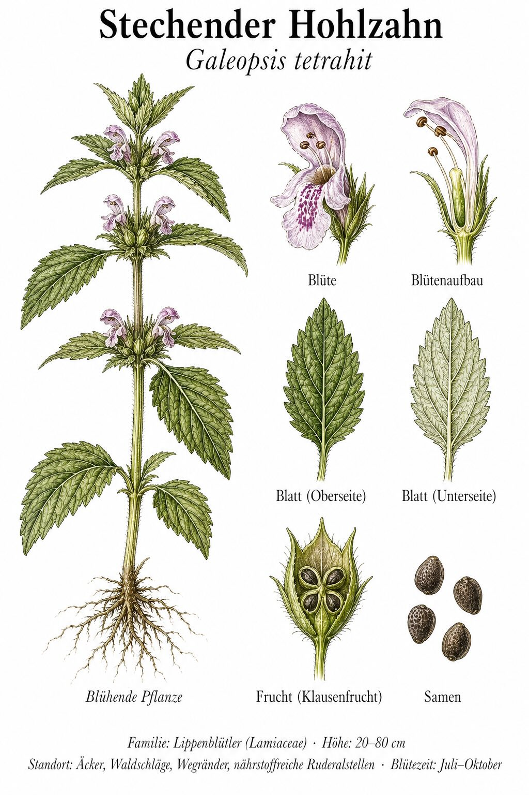
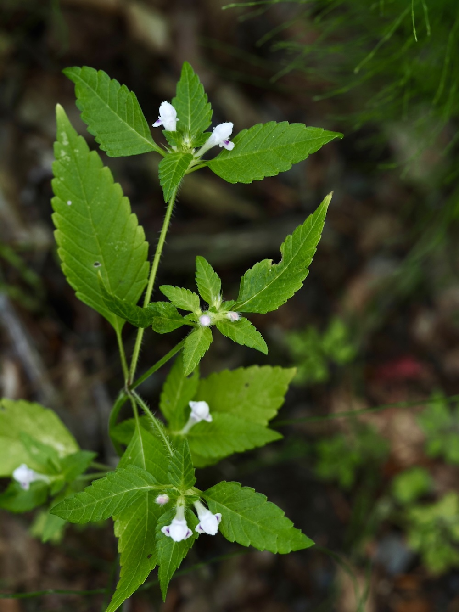
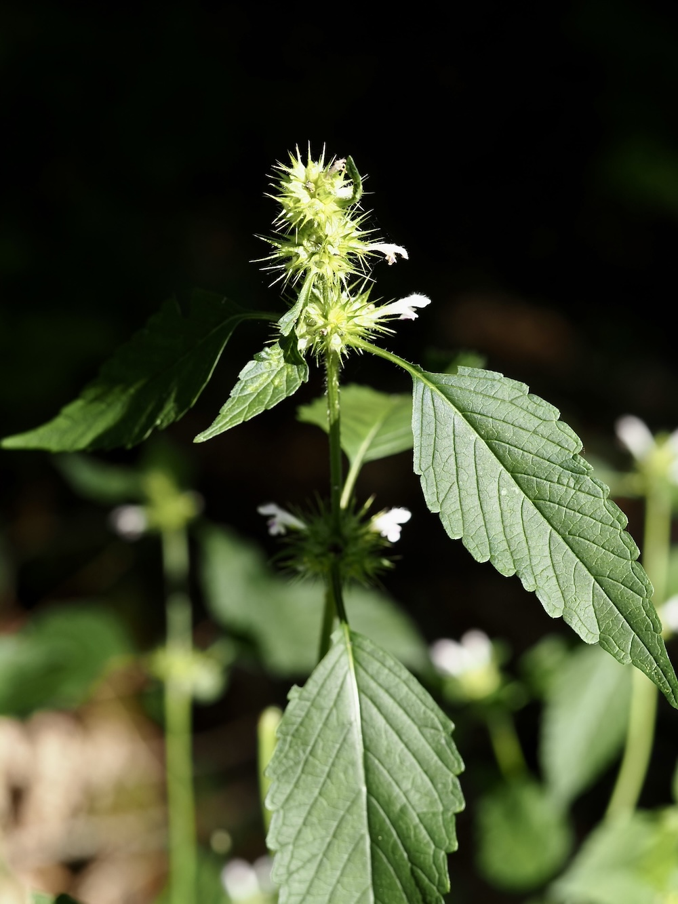

Stacheln aus Selbstschutz
Wer den Stängel des Hohlzahns mit der Hand greift, merkt’s sofort: An den Knoten sitzen kurze, harte Borsten — fast wie kleine Stacheln. Das ist eine ungewöhnliche Eigenschaft für einen Lippenblütler und schützt die Pflanze vor Verbiss durch Wild und Schnecken. Selbst Pferde und Kühe meiden ihn auf der Weide — was ihm einen klaren Konkurrenzvorteil verschafft.
Vier-Zacken im Mund
Der Name „tetrahit“ kommt vom griechischen „tetra“ (vier) und „hit“ (geprägt). Gemeint sind die vier zahnartigen Zacken im Schlund der Blüte — sie sehen aus, als hätte jemand mit einem winzigen Hammer kleine Spitzen reingedrückt. Diese Zacken dienen als „Hummel-Trichter“: Sie zwingen die Hummel, sich tief in die Blüte zu drücken, wo sie den Pollen aufnehmen muss.